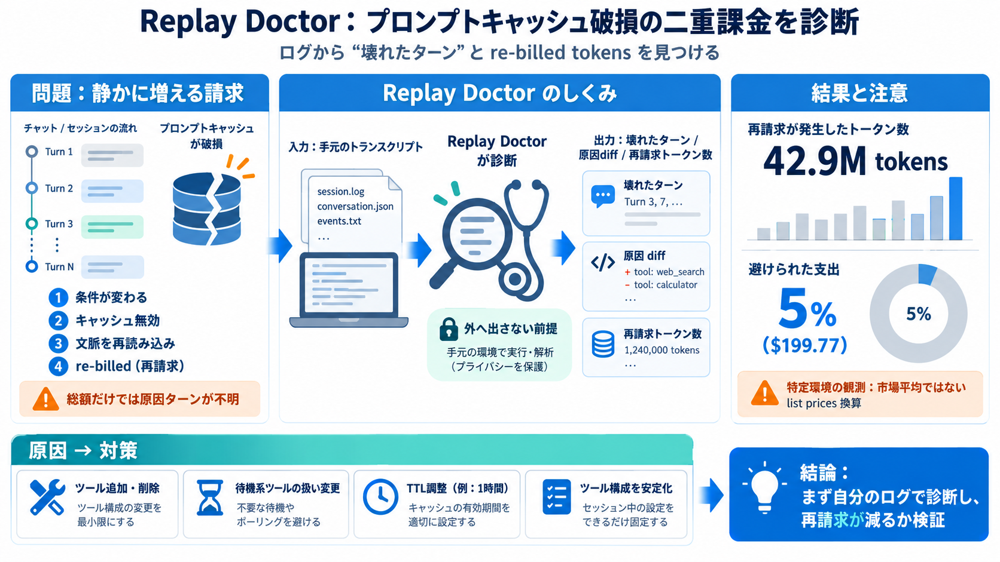

起きること
cache broke on turn → 文脈が再適用 → re-billed（書き込み価格で再請求）

AIエージェント運用で、プロンプトキャッシュが壊れた瞬間をログから特定し、再請求されたトークン量まで示す診断ツール。
プロンプトはキャッシュできるが、セッション途中で条件が変わるとキャッシュが無効化され、同じ文脈を“再読み込み”して高いレートで課金され得ます。
cache broke on turn → 文脈が再適用 → re-billed（書き込み価格で再請求）
総額だけ見ても原因（どのターンで壊れたか）が分からず、対策が後手になります。
本来は“前回の道順”を再利用すべきところが、途中で地図条件が変わって“やり直し”になり、料金だけが二重に積み上がります。
ディスク上のトランスクリプトを読み取り、キャッシュが壊れたターン、原因（条件差分）、再請求トークン数を提示します。
手元のトランスクリプト（記録ログ）
壊れたターン / 原因 / tokens re-billed / 関連差分（diff）
ある運用サンプル（1台のマシン、119セッション、1,881のエージェント・レーン）では、読み直しが発生したトークンが42.9M。支出全体に対する“避けられた（二重課金）”部分は5%（$199.77）とされています。
42.9M tokens
5%（$199.77）
キャッシュ破損は、プロンプト入力を左右する“条件”が変わることで起き得ます。具体例として、ツール名の追加・削除や、特定の待機系ツールの扱い変更が挙げられます。
追加・削除（例：ツール名の差分）
待機系ツールの扱い変更
短いセッション主体なら、TTL（キャッシュ保持時間）調整や構成安定で済む場合があります。無人運用やサブエージェント運用では、診断の価値が上がります。
TTL調整（例：1時間）で十分になり得る
サブエージェント＋計測が細かいほど、二重課金の損失が見逃されやすい
5%や42.9Mは“市場の平均”ではなく、観測範囲に偏り得る1台・特定期間の実証です。また、金額換算はlist prices前提で、契約単価と一致しない可能性があります。
条件依存：ツール構成、モデル切替、TTL等で変動
あなたの契約割引が反映されない恐れ
入力データの説明を、意思決定に必要な形に圧縮します。
セッション途中で条件が変わり、キャッシュが無効→再読み込み→再請求。
壊れたターン／原因（diff）／再請求トークン数。
list prices換算であり、支払額と一致しない場合がある。
“Nothing leaves your machine”（外へ出ない）前提。利用者が自分でファイル投稿。
条件依存が強い。自分のログで再請求率を診断して確認するのが合理的。
Replay Doctorの価値は、総額ではなく“二重課金が起きたターンと原因”をログから特定し、設定変更（TTL、ツール構成の安定化）へ直結させる点にあります。
自分のトランスクリプトで診断→壊れたターンとre-billed tokensを確認。
TTL調整（例：1時間）やツール差分の抑制を検討し、再請求が減るか検証。
No references found